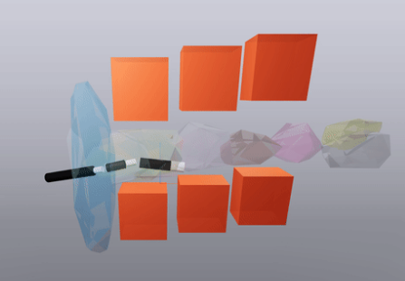
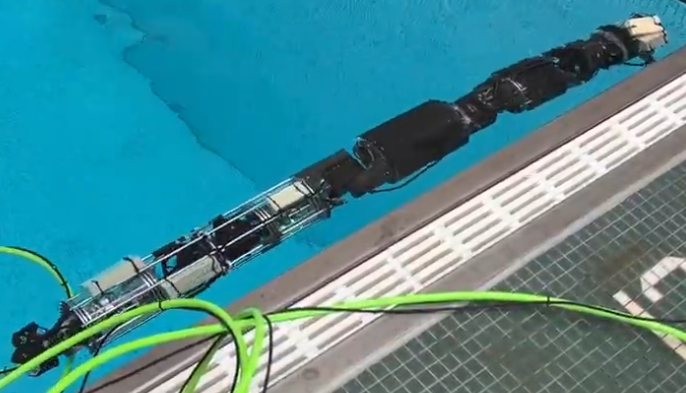
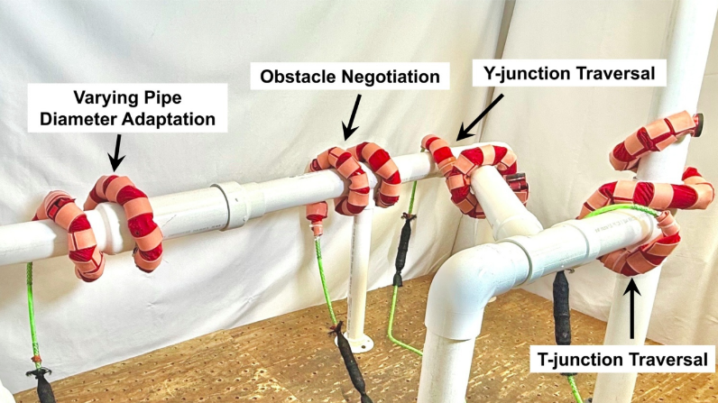
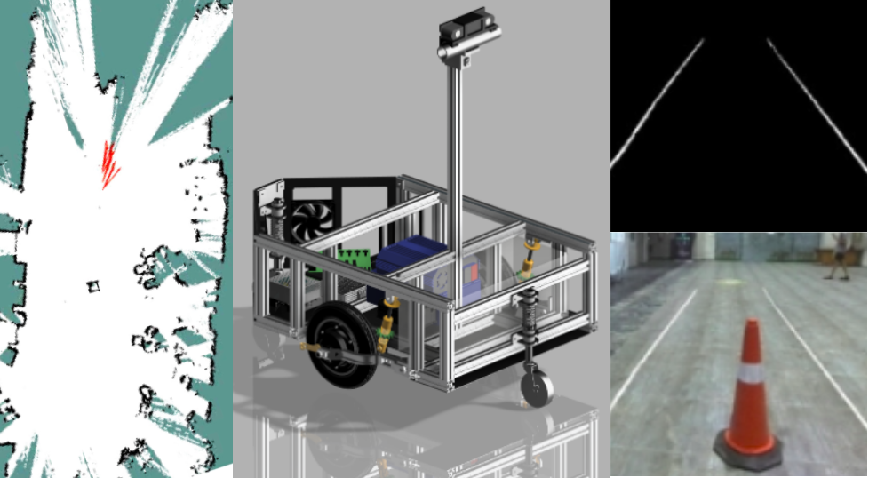
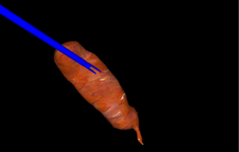
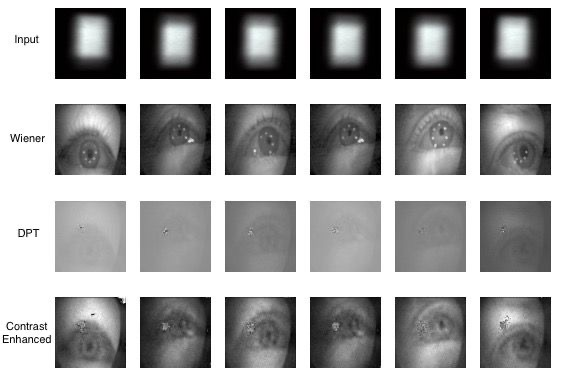

Projects

INSATxGCS for Modular Underwater Snake Robot
Developed a motion-planning framework combining INterleaved Search And Trajectory optimization (INSAT) and Graph of Convex Sets (GCS) for planning collision-free dynamically feasible trajectories for modular underwater snake robot.
Anchoring and Reaching Behavior of Snake Robots in Confined Environments
Led the assembly, hardware integration, and experimental deployment of a 16-link snake robot to demonstrate anchoring and reaching behaviors in confined environments using kinodynamic motion planning.

Modeling, Control, and State Estimation of an Underwater Snake Robot
Developed a dynamics model, PID-based station-keeping controller, and IMU-based attitude estimator for an underwater snake robot. Adapted vision-based localization for underwater deployment through 3D-printed AprilTags and underwater camera calibration, and explored VINS-Mono for visual-inertial localization.

Compliant Locomotion for Snake Robots in Complex Pipe Networks
Implemented and evaluated a torque-based compliance framework that enables a snake robot to sense its interaction with the environment and adapt its locomotion accordingly. Integrated the framework with gaits for pipe climbing, varying-diameter pipes, T-junction traversal, and obstacle avoidance, and validated its behavior through simulation and comparison with real-robot data.
Adversarial Ergodic Search with Game-Theoretic Deception
Developed deceptive strategies for agents performing ergodic search while being pursued by adversaries attempting to reconstruct the underlying information map. By deliberately misleading adversaries, the proposed strategies reduce information leakage compared to a baseline in which the exploring agents use fictitious play.

Autonomous Navigation of a Differential-Drive Robot
Developed a complete ROS 2 based autonomy stack for a differential-drive robot, from simulation in Gazebo to real-world deployment. Implemented and integrated systems for mapping, localization, and motion planning, followed by extensive testing on physical hardware. The robot was deployed to compete in the 31st Intelligent Ground Vehicle Competition in Michigan, USA.
Autonomous Golf Cart
Worked on an autonomous golf-cart platform, developing a GPS waypoint navigation system, a pure pursuit controller for trajectory tracking, and vision based drivable-region segmentation. Contributed to the integration and testing of these components within a broader autonomy stack incorporating perception, planning and control.

Visuomotor Renforcement Learning for Soft Tissue Manipulation in Minimally Invasive Surgery
Developed a visuomotor reinforcement-learning agent for grasping target locations on deformable soft tissue. Used SOFA to simulate soft-body dynamics and generate synthetic datasets, and investigated visual feature representations using pretrained VGG16 features, convolutional autoencoders, and other learned representations.

Gaze Estimation from Lensless Camera Images
Developed a two-stage gaze-estimation pipeline for lensless cameras. Fine-tuned a Dense Prediction Transformer (DPT) to reconstruct images of the eye from lensless camera measurements, which were then used for gaze-direction prediction, achieving a mean angular error of 1.17°.
Port Hamiltonian Modelling and Control of Snakeboard
Reproduced the port-Hamiltonian formulation of the nonholonomic Snakeboard system from the paper, deriving reduced momentum coordinates spanning the admissible momentum subspace and simulating its dynamics. Constructed bond-graph representations to analyze the system's energy structure and developed an energy-based controller that transfers energy from the torso motion into forward momentum over time.